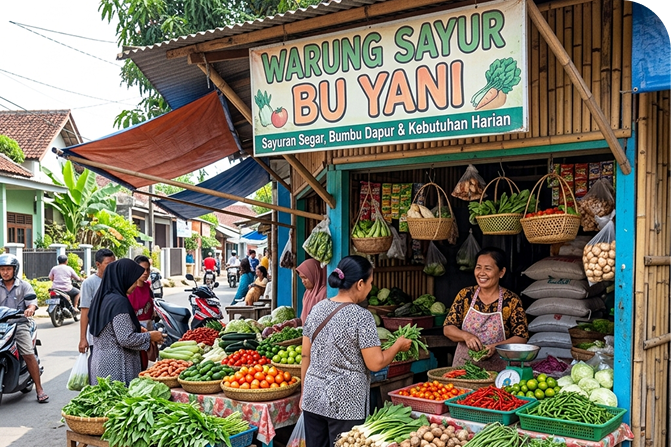
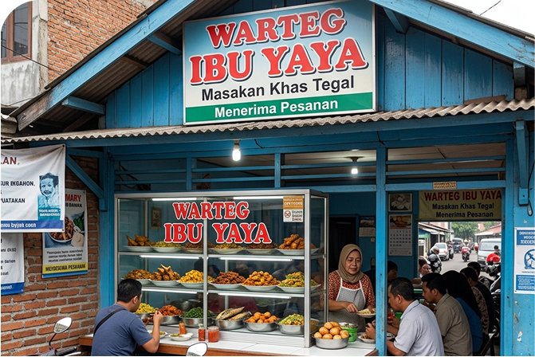
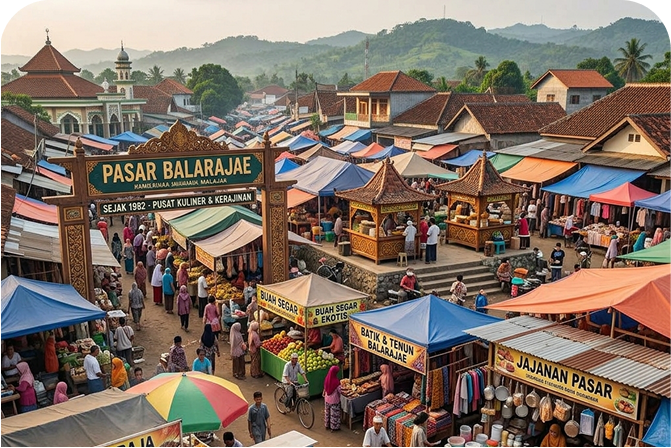
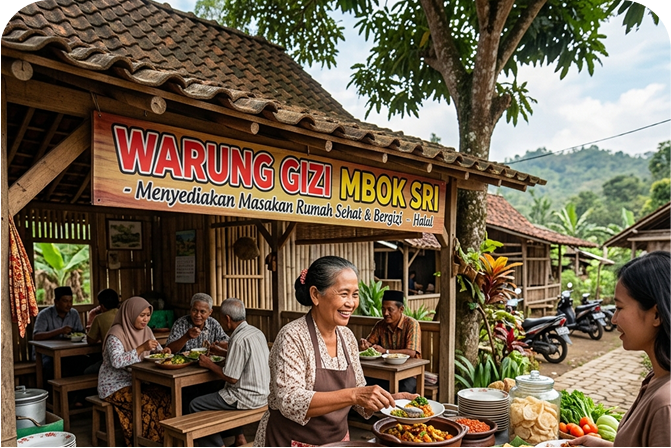
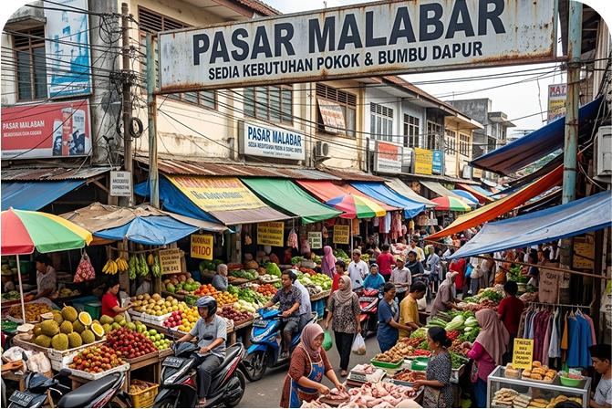
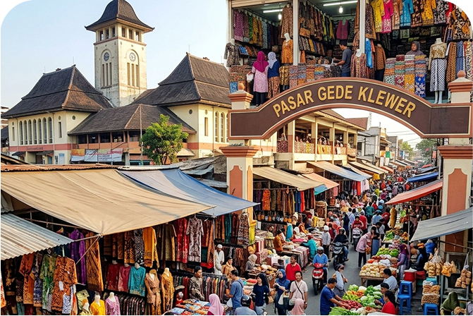
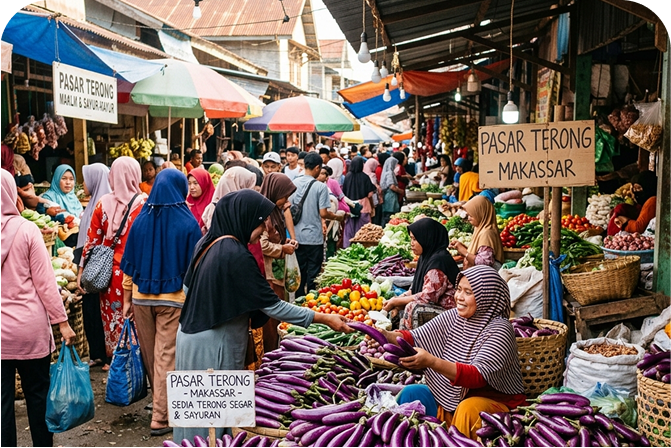
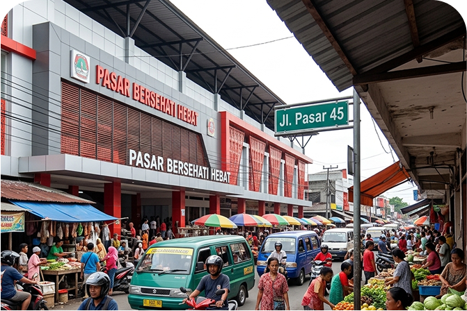
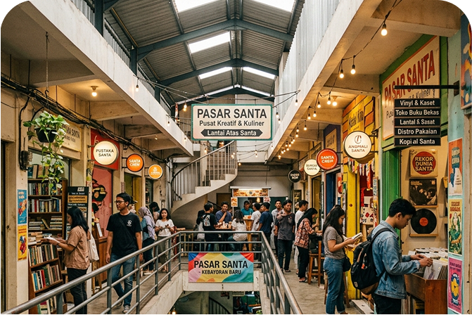

Cari pasar atau warung sehat di sekitarmu, lihat bahan bergizi apa yang tersedia, lalu belanja hari ini juga.
650+
Lokasi Terpetakan
38
Kota Tercakup
Rp750rb
Hemat rata-rata/bulan

Jl. Cisitu Indah III No. 4, Bandung
06.00 - 19.00 (Sen-Ming) kldklkfldkfld

Jl. Tebet Raya No. 8, Jakarta Selatan
07.00 - 21.00 (Sen-Ming)

jl. Balarajae Raya, jakarta Pusat
05.00 - 13.00 (Sen-Ming)

Jl. Kaliurang KM 5, Yogyakarta
05.00 - 13.00 (Sen-Ming)

Jl. Malabar No. 12, Bandung
05.00 - 13.00 (Sen-Ming)

Jl. Urip Sumoharjo, Surakarta
05.00 - 13.00 (Sen-Ming)

Jl. Terong No. 1, Makassar
05.00 - 13.00 (Sen-Ming)

Jl. Pasar 45, Manado
05.00 - 13.00 (Sen-Ming)

Jl. Cipaku I No. 1, Jakarta Selatan
05.00 - 13.00 (Sen-Ming)
Kirim nama dan alamatnya, tim kami akan verifikasi lalu menambahkannya ke Peta Pangan supaya orang lain ikut terbantu.